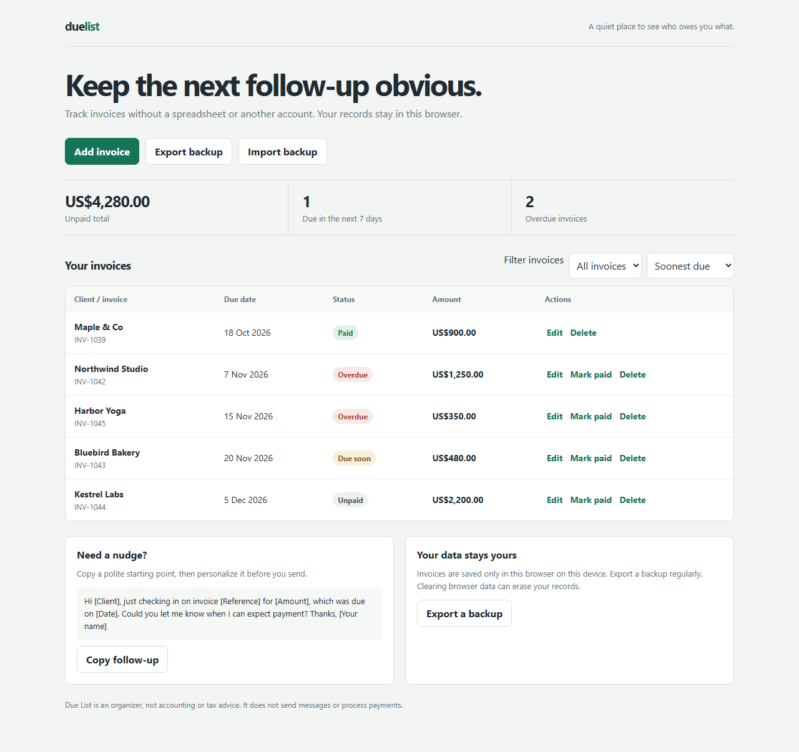
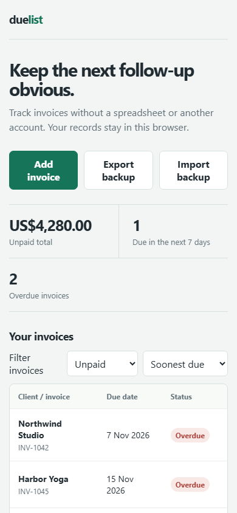
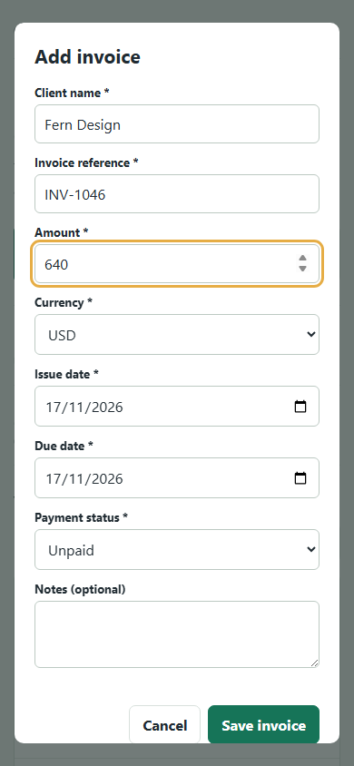

Know who still owes you, at a glance.
Due List is a small invoice tracker for freelancers who keep their invoices in notes or a spreadsheet. Open one file in your browser, add your invoices, and see what is overdue, what is due soon, and how much is still owed.
Buy Due List for $7
You'll like this if
- You have asked yourself "who still owes me?" and had to dig through emails to answer.
- You send a handful of invoices a month and accounting software feels like too much.
- You want to see what is late, and you are happy to send the follow-up yourself.
Not for you if you need to create PDF invoices, send automatic reminder emails, or do tax and accounting. Due List does none of those.
With Due List you can
- Add an invoice with one short form: client, reference, amount, currency, issue date and due date.
- See your unpaid total, what is due in the next 7 days and what is overdue.
- Filter by status and mark an invoice paid when the money lands.
- Copy a polite follow-up message, make it your own and send it from your own email.
- Save a backup file and load it again on another computer or phone.


Set up in 3 steps
- Pay, then press Download ZIP on your download page and unzip it.
- Open
index.htmlin your browser. Nothing to install. - Add your first invoice. Save a backup file once a week.
What you get
- Due List (one file that works offline)
- A one-page setup guide
- A personal-use licence
If something goes wrong
- Refund: if it does not work for you, ask within 14 days of purchase and you get your money back.
- Help: open a request on our support page. Requests there are public, so never post card details or order numbers.
- Limits: your list lives in one browser and does not sync on its own. Clearing your browser data deletes it, so keep the backup file. Totals are not converted between currencies.
Questions
How do I get it after paying?
Stripe sends you straight to your download page after payment. Bookmark it, press Download ZIP, unzip, and open index.html. Lost the page? Open a support request and we will send the link again.
Does it work on my phone?
Yes, in a modern phone browser. On a small screen the invoice table scrolls sideways. Your phone keeps its own list; use a backup file to move data between devices.
Where is my data?
Only in your browser on your device. Nothing is uploaded to us.
Can I move it to a new computer?
Yes. Save a backup on the old one and load it on the new one.
Does it send reminders for me?
No. It shows who is late and gives you a message to copy.
Is it accounting software?
No. It tracks what you are owed. It is not tax or financial advice.